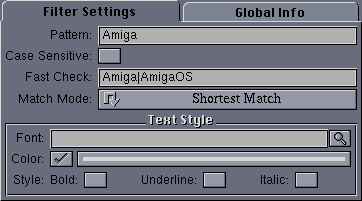

|
User Interface
|
The user interface for this filter looks like this:

The available configuration options are:
- Pattern - An AmigaOS pattern matching the text that should be highlighted.
- Case Sensitive - If set, pattern matching is case sensitive.
- Fast Check - Since pattern matching is slow on some systems,
an initial faster check for these fixed strings is performed, and only
lines which contain one or more of the given strings are checked for the
actual pattern. This can save quite a few expensive pattern
matches. This string should contain one or more strings separated by a
vertical bar ("|") character.
- Match Mode - This can be set to Shorest Match, to
match the shortest section of the line which matches the given pattern,
or Longest Match, to match the longest.
For example, if an article line contains:
and the pattern is foo*t, then the shortest match is foo t,
while the longest is foo test bloot.
- Font - If non-null, this font is used to highlight text
matching the given pattern.
- Color - If selected, this color is used to display text
matching the given pattern.
- Style - The text style for displayed text.
Back to Top
|